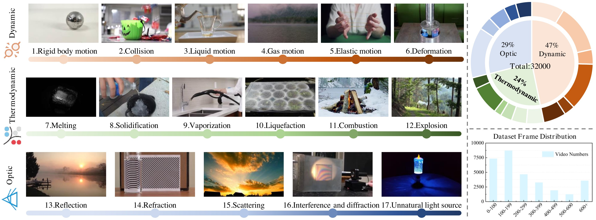
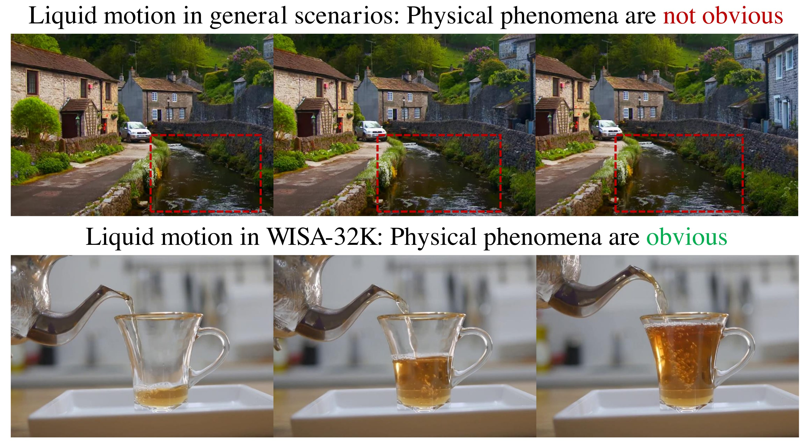
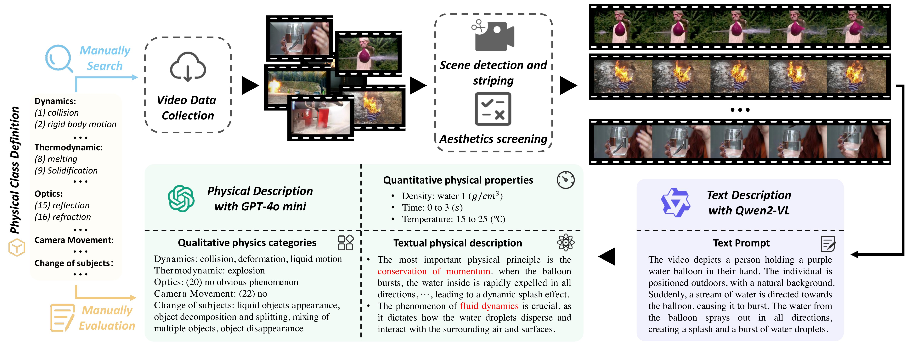
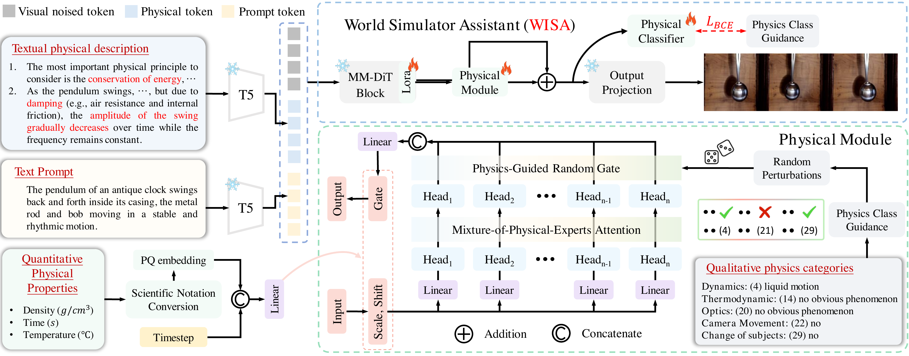
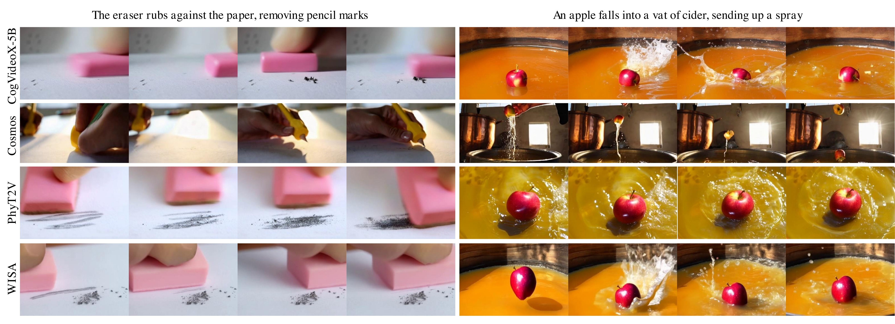
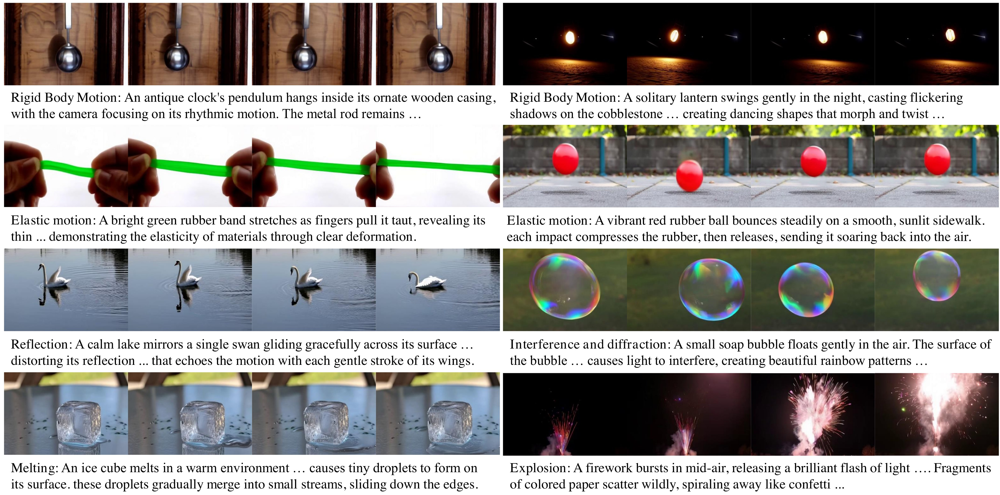
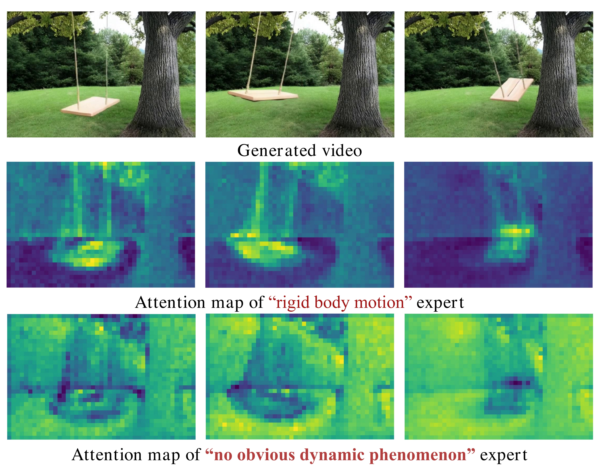
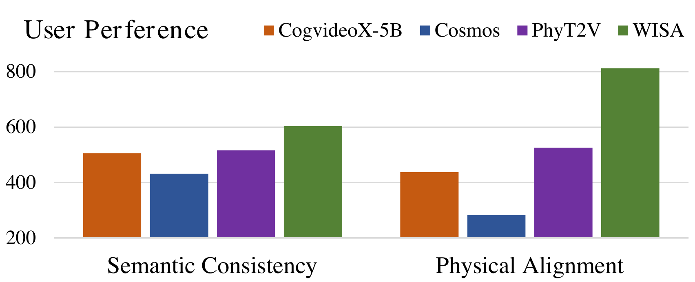

🎮 费曼一分钟（通俗速读）
Sora、Kling、CogVideoX 能生成逼真视频，但常违反物理：橡皮擦越擦字越黑、苹果落水没有溅起水花、液体运动像随机噪声。根因是抽象物理定律与像素生成之间缺桥梁——模型只学「画面像什么」，没学「过程该怎么演化」。
WISA（World Simulator Assistant）做两件事：① 把物理知识拆成三层结构化条件——文本物理描述（补全 prompt）、定性 29 类物理标签（碰撞/熔化/折射…）、定量属性（运动密度、时间/温度范围）；② 在 CogVideoX-5B 等基座上插入 MoPA（每类物理一个 attention head 专家）和 Physical Classifier（逼模型「认出」场景里有哪些物理现象）。配套数据集 WISA-32K：人工采集 3.2 万条「物理现象清晰可见」的短片，GPT-4o mini 自动标注。
关键数字：基座 CogVideoX-5B · VideoPhy SA 0.67（+0.07）PC 0.38（+0.05）· 推理 220s vs PhyT2V 1800s · 参数 +3.5%、推理 +5%。
📄 Teaser：WISA-32K 覆盖 17 类物理现象

Abstract
Recent T2V models (SoRA, Kling) show potential for world simulators, but struggle to grasp abstract physical principles and generate videos adhering to physical laws — due to lack of clear physical guidance.
We introduce WISA, decomposing physical principles into textual descriptions, qualitative categories, and quantitative properties. Key designs: MoPA and Physical Classifier. Dataset WISA-32K: 32,000 videos, 17 physical laws across dynamics, thermodynamics, optics. Considerable improvement on VideoPhy.
SoRA、Kling 等 T2V 有构建世界模拟器的潜力，但难以理解抽象物理原理、生成符合物理定律的视频——缺清晰物理引导。
提出 WISA：物理原理分解为文本描述、定性类别、定量属性；MoPA + Physical Classifier 嵌入生成。WISA-32K 含 3.2 万视频、17 类物理定律。VideoPhy 显著提升。
双贡献：框架（结构化物理条件 + MoPA/Classifier）+ 数据（WISA-32K）。与 PhyT2V 等「推理时迭代改 prompt」不同，WISA 走训练时物理先验注入路线，推理几乎无额外开销。
1. Introduction
Gap: Physical laws are abstract language; generative models map text → visual appearance. The reasoning chain from principle to phenomenon is missing — worse in video where temporal order of events must hold.
Three-level decomposition: (1) Textual physical description — concatenated with caption before text encoder; (2) Qualitative categories — 17 phenomena × 3 branches → 29 labels incl. motion/state auxiliaries; MoPA assigns one expert head per category; (3) Quantitative properties — density, time range, temperature → AdaLN embeddings.
Data problem: General datasets (Koala-36M, OpenVid) entangle multiple weak physical cues — water flow as background, not primary subject (Fig. data_compare).
鸿沟：物理定律是抽象语言；生成模型做文本→外观映射。原理到现象的推理链缺失；视频还需保持事件时序。
三层分解：① 文本物理描述拼进 caption；② 定性 29 类标签 + MoPA 每类一头；③ 定量密度/时间/温度经 AdaLN 注入。
数据问题：通用数据集中物理现象弱耦合、多过程交织——如 Koala 里水流只是背景，模型难学流体定律。
与 PhyT2V / Cosmos 对比
PhyT2V：生成后 VLM 打分 → 改 prompt 多轮（~9× 推理时延）。WISA：训练内化物理，220s 单次生成。Cosmos：世界模型路线但 PC 低（0.18），时序混乱。
📄 Figure：Koala-36M vs WISA-32K 数据对比

2. WISA-32K
17 phenomena under Dynamics (6): Collision, Rigid Body, Elastic, Liquid, Gas, Deformation; Thermodynamics (6): Melting, Solidification, Vaporization, Liquefaction, Explosion, Combustion; Optics (5): Reflection, Refraction, Scattering, Interference/Diffraction, Unnatural Light.
Pipeline: Manual collection (32K, no on-screen text) → PySceneDetect shot split → aesthetic filter → Qwen2-VL caption (256 tokens) → GPT-4o mini structured annotation (5 rounds qualitative + 3 rounds quantitative).
29 qualitative categories = 17 phenomena + 3 "no obvious X" + 9 visual/motion state tags. Quantitative: motion density, time span, temperature span (scientific notation in model).
17 类现象：动力学 6（碰撞、刚体、弹性、液体、气体、形变）；热力学 6（熔化、凝固、汽化、液化、爆炸、燃烧）；光学 5（反射、折射、散射、干涉衍射、非自然光源）。
流水线：人工采集 → 镜头切分 → 美学过滤 → Qwen2-VL 描述 → GPT-4o mini 结构化标注。
定性共 29 类；定量含运动密度、时间范围、温度范围。
Caption-based 标注 vs 多模态直标：准确率 76% vs 78%，但 token 成本约 2k vs 10k/样本——性价比选 caption 路线。项目页后续扩展为 WISA-80K，论文主实验用 32K。
📄 Figure：WISA-32K 数据流水线

3. Method
Base: CogVideoX-5B. Text descriptions → concat with caption, use frozen text encoder semantics.
Physical Module (MoPA): $P_c \in \mathbb{R}^{C}$, $C{=}29$. Multi-head self-attention with $h{=}C$ heads; $\hat{P_c} = \mathrm{Random}(P_c)$ noise (flip 0↔1 w.p. 0.2); $F_o = \mathrm{Linear}(\mathrm{Reshape}(F_h \odot \hat{P_c}))$.
Quantitative: time/temperature in scientific notation → linear map → concat timestep → AdaLN into denoising features.
Placement: One Physical Module after the last DiT block only (+3.5% params).
基座 CogVideoX-5B。文本物理描述与 caption 拼接进文本编码器。
MoPA：29 维类别向量；MHSA 输出 $F_h$ 与扰动后的 $\hat{P_c}$ 逐元素乘，再线性还原维度——只激活相关物理专家头。
定量属性科学计数法编码后经 AdaLN 注入。Physical Module 仅插在最后一个 Transformer block 之后。
受 MoH（Mixture-of-Heads）启发：每个 head = 一类物理专家。Random 扰动缓解标注噪声（错标/漏标）。Attention map 可视化（Fig. atten_map）：刚体运动 expert 聚焦摆锤区域，非动力学 expert 看静态背景——专家分工成立。
详见 代码 §② 中 PhysAttnProcessor_2_0 的 soft_priori 逻辑。
Physical Classifier: Multi-label BCE on $P_c$; predicted $f_c$ from denoising features + sigmoid.
$$L = L_{\mathrm{diffusion}} + \lambda L_{pc} / (1 + L_{pc}.\mathrm{detach})$$
Classifier forces the model to recognize abstract categories, not only generate pixels — auxiliary task stabilizes physics learning.
Physical Classifier：多标签 BCE；从去噪特征预测 29 维概率。
总损失：扩散损失 + 自适应加权的分类损失（$L_{pc}$ 大时权重自动缩小，防 dominate）。
分类器迫使模型「理解」物理类别，而非纯像素拟合。
去掉 Physical Module：SA 0.64 PC 0.33；去掉 Classifier：SA 0.66 PC 0.36；完整 WISA：0.67 / 0.38。两者均贡献 PC，Classifier 对 SA 也有帮助。
📄 Figure：WISA 整体架构

flowchart LR
subgraph inputs [物理条件三层]
T[文本物理描述]
Q[定性 29 类 P_c]
V[定量 密度/时间/温度]
end
T --> TE[Text Encoder + Caption]
Q --> MoPA[MoPA 专家头门控]
V --> AdaLN[Quantify AdaLN]
TE --> DiT[CogVideoX DiT Blocks]
DiT --> PM[Physical Module]
MoPA --> PM
AdaLN --> PM
PM --> PC[Physical Classifier]
PC --> Loss["L_diff + λ·L_pc/(1+L_pc)"]
PM --> VAE[VAE Decode]
💻 代码对照 — MoPA · Classifier · CogVideoX 集成
官方仓库：github.com/360CVGroup/WISA（基于 finetrainers，支持 CogVideoX / Wan2.1）。数据：HuggingFace qihoo360/WISA。
① 论文模块 → 代码文件映射
| 论文 | 代码路径 | 说明 |
|---|---|---|
| MoPA / Random 扰动 | finetrainers/models/wisa.py · PhysAttnProcessor_2_0 | soft_priori：0↔1 以 0.2 概率翻转，0 默认 0.1 |
| Physical Module | PhysAwareBlock in transformer_cogvideox_wisa.py | 末层后 phys_attn + AdaLN scale/shift |
| 定量 AdaLN | QuantifyPrioriEmbedding | 科学计数法 → sin/cos 频域嵌入 |
| Physical Classifier | phys_classifier + phys_token | prepend 可学习 token，BCE loss |
| 训练入口 | train.py · wisa_specification.py | SFT on WISA-32K/80K |
| 推理 Pipeline | pipeline_cogvideox_wisa.py | 需传入 priori + quantify_priori |
② MoPA 门控 — 与 Eq.(1) 对齐的伪代码
代码里 CogVideoX 实现 expert_head = expert_head * 2（shared + routed heads），比论文公式更贴近 MoH 原版；Wan 分支用 transformer_wan_wisa.py 同样模式。
③ Physical Module 插入位置
④ 推理时需显式传入物理条件
与纯 CogVideoX 不同，pipeline_cogvideox_wisa_multicfg 支持多组物理条件 CFG。生产环境可用 GPT 从 prompt 推断 priori 向量（论文训练时用 WISA-32K 标注；推理可用 LLM 填 29 维或项目提供的工具）。
论文 vs 代码：论文写「仅最后一个 block 后插 Physical Module」；代码用与 block 等长的 phys_transformer_blocks 列表，仅末项为 PhysAwareBlock，其余 nn.Identity()——结构等价，便于扩展多层 phys block 做 ablation。
4. Experiments
Metric: VideoCon-Physics (VideoPhy) — SA (semantic alignment) & PC (physical law consistency). Threshold ≥0.5 → binary PC/SA = 1.
Prompts: 344 VideoPhy + 160 PhyGenBench physics-crafted prompts.
指标：VideoCon-Physics 的 SA 与 PC；≥0.5 记为 1。
测试集：VideoPhy 344 条 + PhyGenBench 160 条物理向 prompt。
VideoCon-Physics 训练数据来自 9 个 T2V 模型生成样本——与 WISA-32K 真实物理视频有分布差；作者 ablation 指出纯 LoRA 提升有限（SA 0.64），需 WISA 结构 + 专用数据。
| Method | Time(s) | VideoPhy SA | VideoPhy PC | PhyGen SA | PhyGen PC |
|---|---|---|---|---|---|
| VideoCrafter2 | — | 0.47 | 0.36 | — | — |
| HunyuanVideo | — | 0.46 | 0.28 | — | — |
| CogVideoX-5B* | 210 | 0.60 | 0.33 | 0.39 | 0.41 |
| Cosmos* | 600 | 0.57 | 0.18 | 0.43 | 0.14 |
| PhyT2V* (R4) | 1800 | 0.61 | 0.37 | — | — |
| WISA | 220 | 0.67 | 0.38 | 0.40 | 0.43 |
WISA VideoPhy SA/PC 双 SOTA；PhyGenBench PC 0.43 SOTA。相对 CogVideoX-5B：SA +0.07、PC +0.05，推理仅 +10s。PhyT2V PC 略高（0.42 on PhyGen）但推理 9× 慢。
- 橡皮擦：WISA 擦净笔迹；CogVideoX 无笔迹；PhyT2V 越擦越黑；Cosmos 无擦除过程。
- 苹果落水：WISA 先平静水面→溅起→浮力；基线水体混乱或缺下落过程。
📄 Figure：与现有 T2V 定性对比

📄 Figure：WISA 更多生成样例

📄 Figure：MoPA 专家 Attention Map

📄 Figure：人工评测

5. Conclusion & Limitation
WISA decomposes physical principles into structured information and guides T2V via MoPA + Physical Classifier + WISA-32K. +3.5% params, +5% inference.
Limits: (1) Only 17 phenomena — no corrosion/vacuum etc.; (2) High-level semantic guidance only — no explicit energy/Newton constraints; (3) Imperfect physics in hard scenarios.
WISA 结构化物理信息 + MoPA/Classifier + WISA-32K 有效提升物理一致性，开销小。
局限：① 物理类别覆盖有限；② 缺机制级约束（能量守恒等）；③ 数据/参数有限，难全覆盖。
PC 0.38 仍不高——物理评测本身难；WISA 是「物理语义引导」而非 PDE 求解器。与可微物理引擎 / NeRF+仿真路线互补而非替代。
符号速查表
| 符号 / 术语 | 含义 |
|---|---|
| WISA | World Simulator Assistant，物理感知 T2V 辅助框架 |
| MoPA | Mixture-of-Physical-Experts Attention，每物理类一头 |
| $P_c$, $C{=}29$ | 定性物理类别多标签向量 |
| $\hat{P_c}$ | Random 扰动后的类别门控（缓解标注噪声） |
| $F_h$, $F_o$ | MHSA 输出与门控后恢复的特征 |
| $L_{pc}$ | Physical Classifier 多标签 BCE |
| WISA-32K | 3.2 万物理突出视频 + 三层标注 |
| SA / PC | VideoPhy 语义对齐 / 物理定律一致性 |
| VideoCon-Physics | VideoPhy 基准的 VLM 评判器 |
论证结构总览
→ 观察（通用数据物理弱耦合 · Koala 水流只是背景）
→ 论点（三层物理信息分解 + MoPA/Classifier + 专用数据）
→ 方法（文本拼 caption · 29 类门控 MHSA · 定量 AdaLN · 末层单 Physical Module）
→ 数据（WISA-32K：17 类 · Qwen2-VL + GPT-4o mini 标注）
→ 证据（VideoPhy SA 0.67 PC 0.38 · 220s · ablation · attention map · human eval）
→ 局限（17 类 · 无机制级约束 · PC 仍有限）
→ 结论（世界模拟器辅助路线 · 开源 360CVGroup/WISA）
核心主张（一句话）
将物理原理结构化为可训练条件（文本/定性/定量），用 MoPA 专家注意力与 Physical Classifier 微调 CogVideoX-5B，配合 WISA-32K，以极小开销显著提升 VideoPhy 物理一致性。
来源：arXiv:2503.08153 · NeurIPS 2025 · Project Page · GitHub
🧩 结构化十问（AI 解构）
让 AI 当助教，从十个角度提取论文骨架。
Q1 · 论文试图解决什么问题？
Q2 · 这是否是一个新问题？
Q3 · 要验证什么科学假设？
Q4 · 有哪些相关研究？
- 世界模型：Sora, Cosmos, CogVideoX, HunyuanVideo
- 物理评测：VideoPhy, PhyGenBench, VideoCon-Physics
- 物理增强生成：PhyT2V（迭代 prompt）
- MoE/MoH：MoPA 受 MoH 启发
Q5 · 解决方案的关键是什么？
Q6 · 实验是如何设计的？
Q7 · 用什么数据集？代码开源吗？
qihoo360/WISA。Q8 · 实验结果是否支持假设？
Q9 · 贡献是什么？
Q10 · 下一步可以做什么？
🔬 深挖追问
第一性原理 · 为何要「分解」物理信息？
单一 prompt 把「场景描述」与「物理定律」混在同一语义空间，T5/LLM 编码后梯度信号纠缠。分解后：文本描述走已有语义通道补全因果叙述；定性标签提供离散开关选 expert；定量调制扩散时间步强度——类似 ControlNet 多条件，但条件语义是物理专用的。
第一性原理 · MoPA vs 标准 Cross-Attention
Cross-attn 把文本 token attend 到视觉 token，但「碰撞」与「熔化」在文本 embedding 空间可能相近。MoPA 在视觉 self-attn 的 head 维硬分工——每 head 只学一类物理的空间—时间模式，门控 $P_c$ 在推理时选专家。比增大 prompt 更直接地控制「激活哪种物理动力学模板」。
第一性原理 · 数据为何必须「物理突出」？
因果 identifiability：若数据中物理与背景共变（Koala 风景+水流），模型学 $P(\text{video}|\text{caption})$ 时物理信号被稀释。WISA-32K 强制单现象高 SNR——类似 ImageNet 对物体分类的必要性，物理类别需要「教科书式」样例。
批判性思维 · 盲区
- 推理 priori 从哪来？训练用 GT 标注；用户只给自然语言 prompt 时，29 维向量需 LLM 推断——错误 priori 可能激活错专家。
- PC 0.38 的含义：VideoCon 是生成式评判器，可能偏好 WISA 风格；需更多 human + 规则物理检测。
- 与 Wan2.1 关系：repo 支持 Wan，论文主表仅 CogVideoX-5B——更强基座 + WISA 上限未在正文充分展开。
- 非物理场景：29 类「无显然 X 现象」标签是否损害通用美学生成？论文未报告非物理 prompt 退化。
- 机制级物理：作者承认缺能量守恒等硬约束——WISA 是 soft guidance，非 simulator。